A field study exploring the people, processes, and decisions behind every pair of spectacles.
Nobody buys a system, they buy a pair of glasses. Behind that purchase is a network of prescriptions, machines, technicians, and opticians working together to deliver a single outcome: clear vision.
This project explored the people and processes behind that journey. Rather than redesigning the product itself, we mapped the system that makes every pair of spectacles possible.
Field locations mapped across Mumbai’s eyewear supply chain.
Distinct stakeholder groups tracked across the ecosystem.
Root-cause map built around a single recurring strain: worker health.
Rather than starting where glasses are made, we began where they are bought. Each visit uncovered another layer of the system—from retail counters to assembly units and lens laboratories.
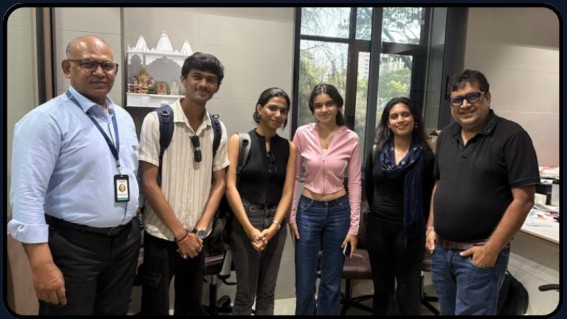
We observed the precision of lens fitting, where even the smallest error could affect the final product.
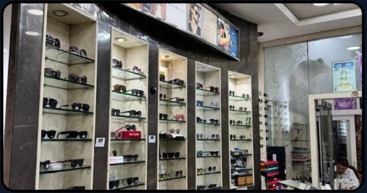
We watched customers, opticians, and prescriptions come together in a series of rapid decisions.
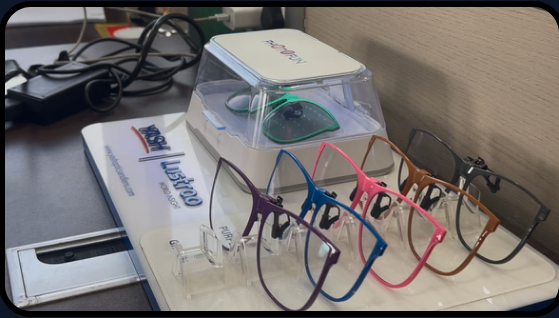
We followed the manufacturing process to understand how raw lenses are shaped, finished, and prepared for assembly.
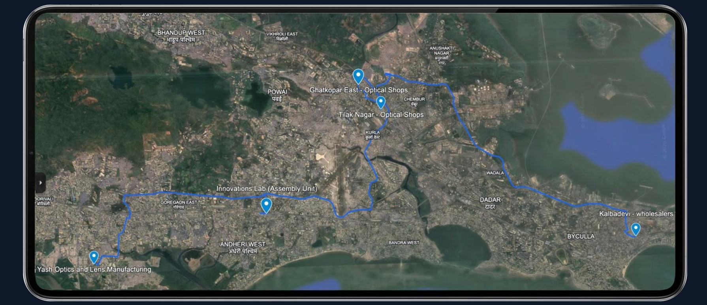
We traced the journey from manufacturing to retail, mapping every stage behind a single pair of glasses.
Each stop added time, coordination, and complexity, revealing how far a simple purchase really travels.
Every stakeholder plays a different role, but the final product depends on how they work together.
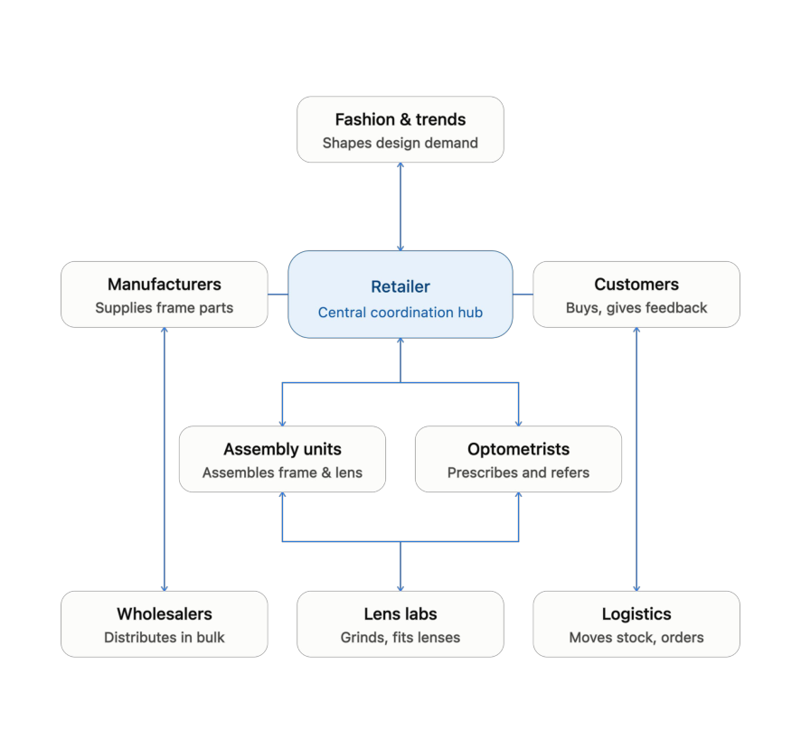
A causal loop diagram revealed how demand, production, and worker strain influence one another—showing where pressure builds across the system.
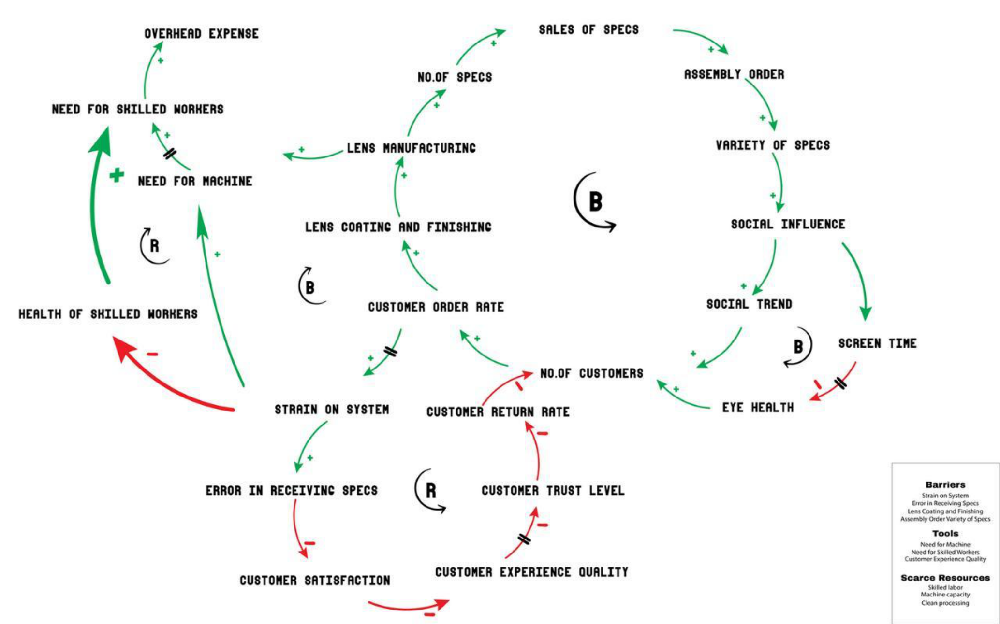
Growing demand increases production pressure, placing greater strain on the same workforce.
As strain rises, errors and returns increase, naturally slowing the system.
The system depends on information flowing between five key stakeholders. Every delay or misunderstanding affects the experience further downstream.
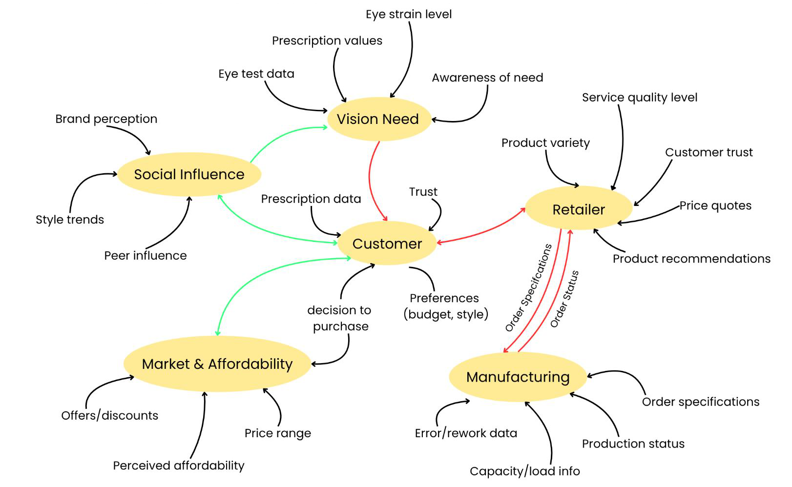
Most communication passes through a single relay point — the retailer.
Simplifying information flow reduces errors and improves coordination.
System maps reveal how the process works. Conversations reveal what it feels like to live inside it, through the people who build, sell, and rely on it every day.
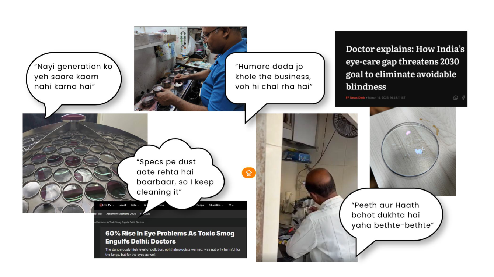
Every issue we observed — fatigue, pain, errors, and attrition, led back to the same underlying cause: a system designed around output rather than worker well-being.
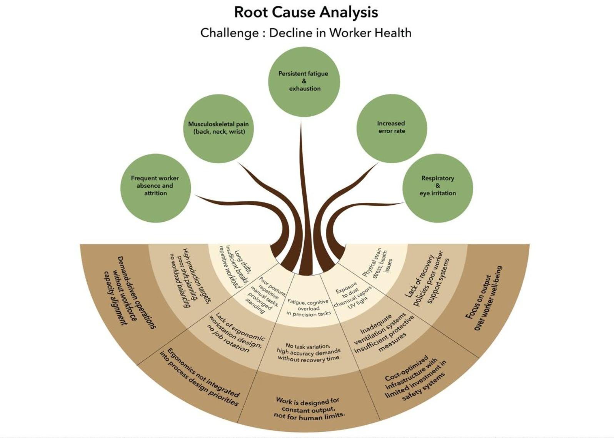
Worker health, product quality, and customer trust are deeply connected. Improving one requires addressing the system behind them all.
Rather than designing another product, the research uncovered opportunities to improve the system itself, from the assembly workspace to everyday eyewear care.
A better workspace can improve precision, comfort, and consistency.
Simple repair tools and guidance can help users address everyday eyewear issues sooner.
Rather than adding new tools, this concept redesigns the workspace itself, giving every tool a place and every movement a purpose.
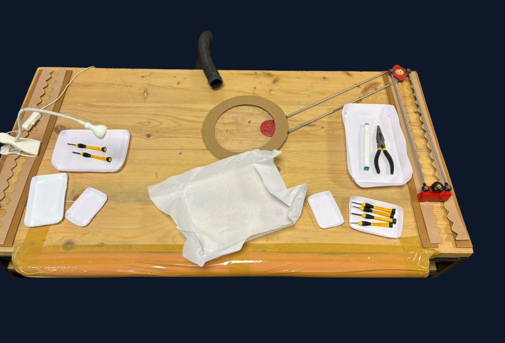
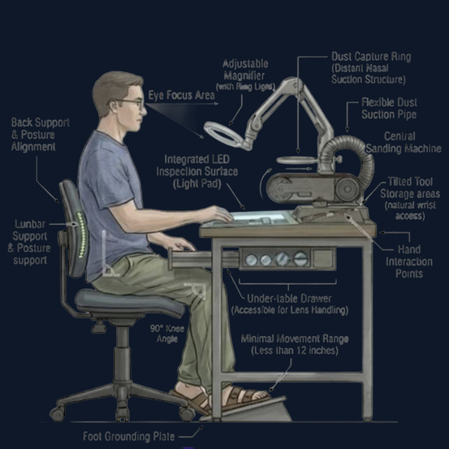
Small issues don’t need to become major repairs. A portable maintenance kit enables quick fixes, helping users care for their eyewear wherever they are.
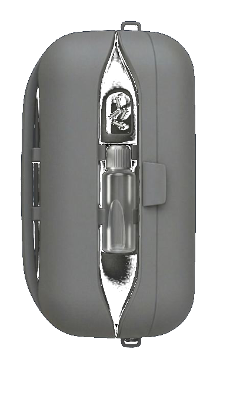
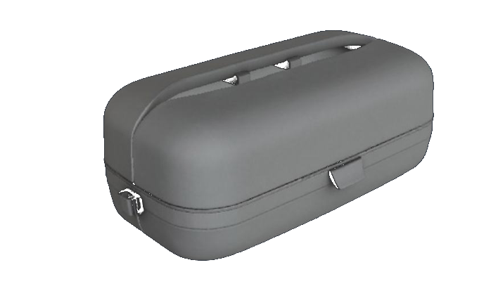
Research became less about individual interactions and more about understanding how people, processes, and decisions connect.
Designing for systems means asking not only who benefits, but who bears the cost of every decision.